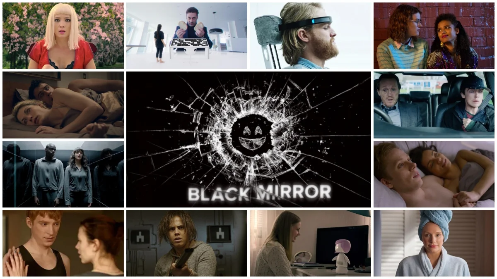

1 Introduction
Exploring the unsettling aspects of contemporary society, the anthology series Black Mirror has captured global attention with its thought-provoking narratives and dystopian scenarios. Created by Charlie Brooker, each episode presents a self-contained story that delves into the repercussions of technological advancements and human behavior. This report investigates the IMDb ratings of Black Mirror episodes, analyzing both audience feedback and critical reception to uncover the standout installments and overarching themes that have contributed to the series’ enduring impact in the speculative fiction genre.

2 General ratings
Firstly, let’s have a look at the heatmap of IMDb users’ episode ratings.
We can see that overall the episodes are rated relatively high by the viewers, although there are some exceptions. The mean rating is 7.64.
2.1 The highest rated episode
The highest rated episode is White Christmas (season 2 episode 4) with rating 9.1.

2.2 The lowest rated episode
The lowest rated episode is Mazey Day (season 6 episode 4) with rating 5.3.
/cdn.vox-cdn.com/uploads/chorus_asset/file/24732122/Black_Mirror_n_S6_E4_00_17_59_07.png)
3 Season ratings
Now let’s look at the rating per each season.
We can see that the rating of episodes are decreasing. The sharpest decrease can be observed *between seasons 4 and 5** (on average the ratings descreased by 1)
4 Recommended episodes
Because each Black Mirror episode contains self contained story, one can choose which episodes to watch and which to skip. Below, there is a list of top 5 episodes by IMDb users’ rating.
| Season | Episode | Rating | Name |
|---|---|---|---|
| 2 | 4 | 9.1 | White Christmas |
| 4 | 4 | 8.7 | Hang the DJ |
| 4 | 6 | 8.6 | Black Museum |
| 1 | 3 | 8.5 | The Entire History of You |
| 3 | 4 | 8.5 | San Junipero |
| 3 | 6 | 8.5 | Hated in the Nation |
And below, there are 5 worst episodes.
| Season | Episode | Rating | Name |
|---|---|---|---|
| 6 | 4 | 5.3 | Mazey Day |
| 5 | 3 | 6.1 | Rachel, Jack and Ashley Too |
| 2 | 3 | 6.6 | The Waldo Moment |
| 4 | 5 | 6.6 | Metalhead |
| 6 | 5 | 6.7 | Demon 79 |
| 5 | 1 | 6.8 | Striking Vipers |